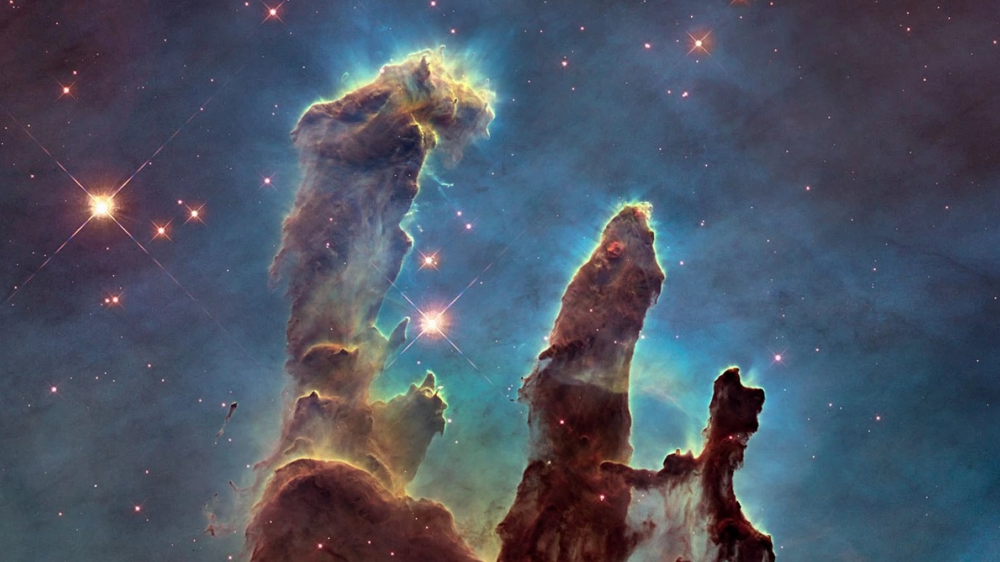
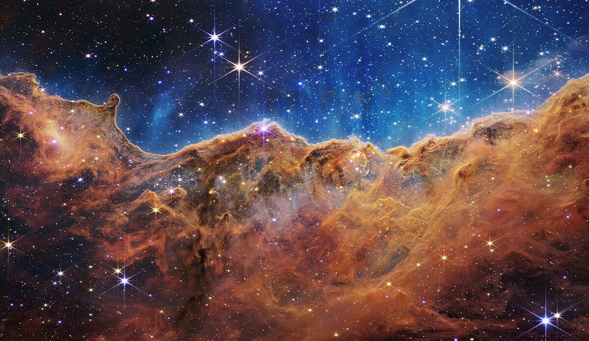
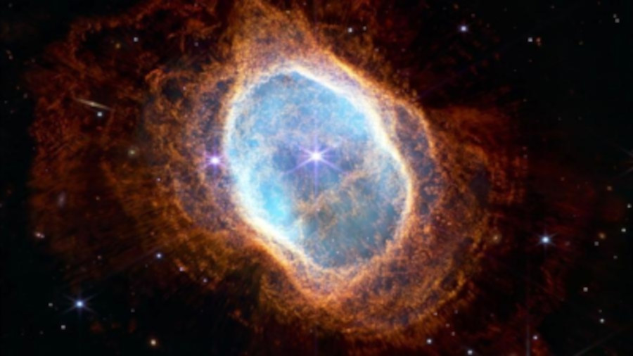

O Telescópio Espacial James Webb capturou uma imagem altamente detalhada dos Pilares da Criação, uma estrutura astronômica formada por nuvens de gás e poeira a 6,5 mil anos-luz de distância da Terra. As informações foram divulgadas pela Agência Espacial Norte-Americana "NASA".
Segundo a Nasa, os pilares tridimensionais parecem formações rochosas, mas são muito mais permeáveis. As colunas são compostas de gás interestelar frio e poeira que podem parecer semitransparentes na luz infravermelha.
As imagens dos Pilares da Criação, que ficaram famosos quando fotografados pelo telescópio espacial Hubble, da Nasa, em 1995, ajudarão os pesquisadores a reformular seus modelos de formação de estrelas, identificando contagens muito mais precisas das recém-formadas, juntamente com as quantidades de gás e poeira na região.
Com o tempo, os astrônomos começarão a construir uma compreensão mais clara de como as estrelas se formam e saem dessas nuvens empoeiradas ao longo de milhões de anos.
O Telescópio Espacial James Webb foi lançado em dezembro de 2021, fruto de parceria entre as agências espaciais dos EUA, da Europa e do Canadá. Desde janeiro deste ano encontra-se no chamado ponto L2, localizado a 1,5 milhão de quilômetros da Terra

Nebulosa Carina
Essa é uma região de formação de estrelas chamada NGC 3324 (ou “Penhascos Cósmicos”) na Nebulosa de Carina, localizada a cerca de 7,6 mil anos-luz de nós, na Via Láctea.
A parte inferior da imagem, que lembra uma paisagem montanhosa, é o amontoado de gás e poeira do qual surgem as estrelas – os objetos brilhantes e pontiagudos na imagem. Ele foi esculpido pela radiaçã ultravioleta e ventos estelares de estrelas jovens e muito quentes localizada acima da área mostrada na imagem.

Nebulosa do Anel do Sul
Obtidas por dois instrumentos científicos do James Webb, essas imagens retratam a nebulosa planetária NGC 3132, conhecida como Nebulosa do Anel Sul, localizada a 2,5 mil anos-luz de nós. No centro, há duas estrelas que estão presas em uma óbita apertada e moldam a paisagem do local.
A estrela mais brilhante está em um estágio inicial de sua evolução estelar, enquanto a mais escura é uma morinbunda que tem enviado gá e poeira por milhares de anos em todas direções . O telescopio Espacial James Webb revelou pela primeira vez que ela esá envolta em poeira.

Curiosidades
As estrelas são esferas de gás quente que nascem dentro de nebulosas. Estas, por sua vez, são nuvens de gás e poeira, como explica a agência norte-americana Nasa.
Depois de milhares de anos, a própria gravidade faz com que as cavidades de matéria densa dentro da nebulosa entrem em colapso sob seu próprio peso. Depois disso, nasce o que é conhecido como protoestrela, que é quando uma das massas de gás se contrai e é o estágio inicial do nascimento de uma estrelas.
Essas protoestrelas são difíceis de encontrar porque são obscurecidas pela poeira das nebulosas.
O brilho que pode ser observado em cada estrela depende principalmente de dois fatores. O primeiro é a quantidade de energia que elas emitem, ou seja, a quantidade de luz que cada estrela tem – e isso faz com que nem todas sejam iguais, algumas podem ser mais brilhantes do que outras. E o segundo fator é a distância que elas estão da Terra. O Sol, por exemplo, corresponde a uma estrela anã amarela de tamanho médio.
O mesmo artigo explica que as estrelas também podem mudar e variar de cor devido à sua temperatura. As estrelas mais quentes são brancas ou azuis, enquanto as estrelas mais frias podem ser laranja ou vermelhas.